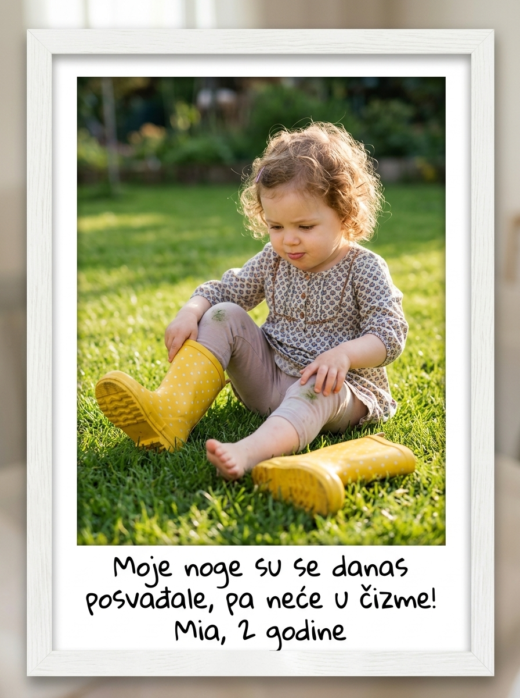
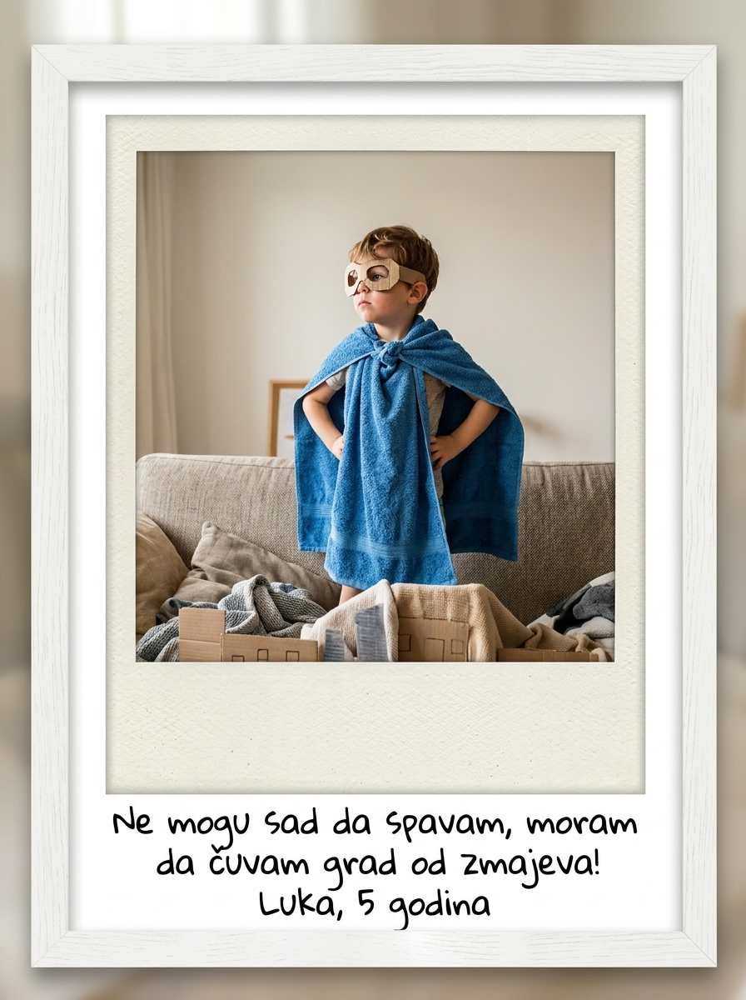
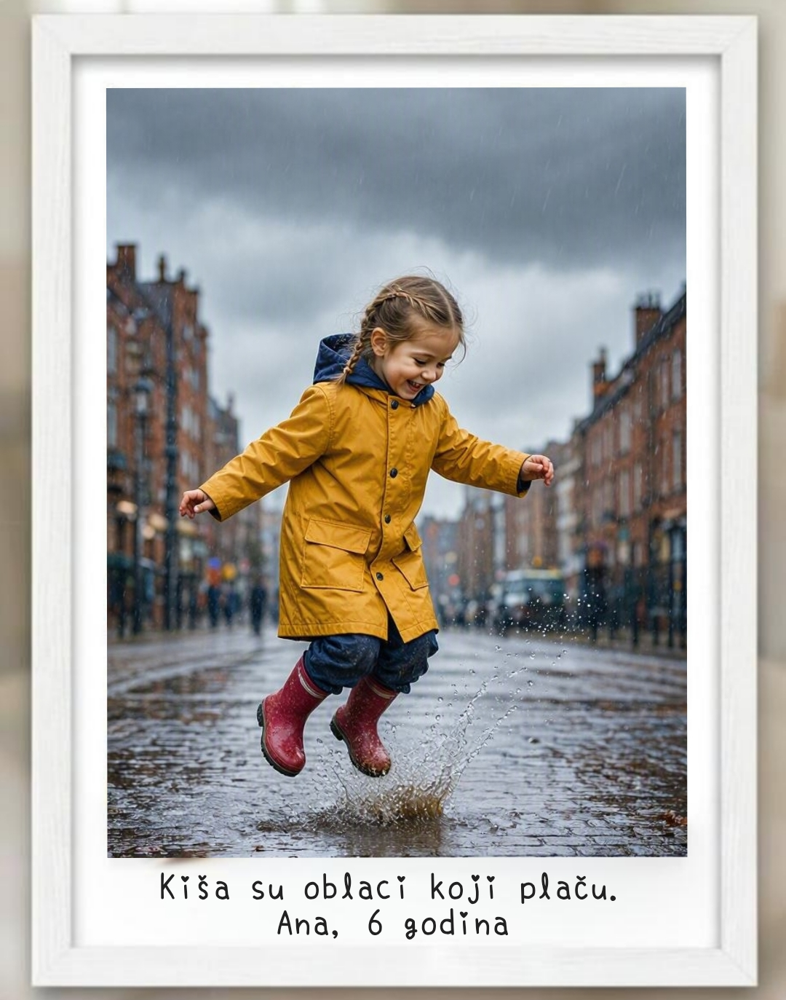
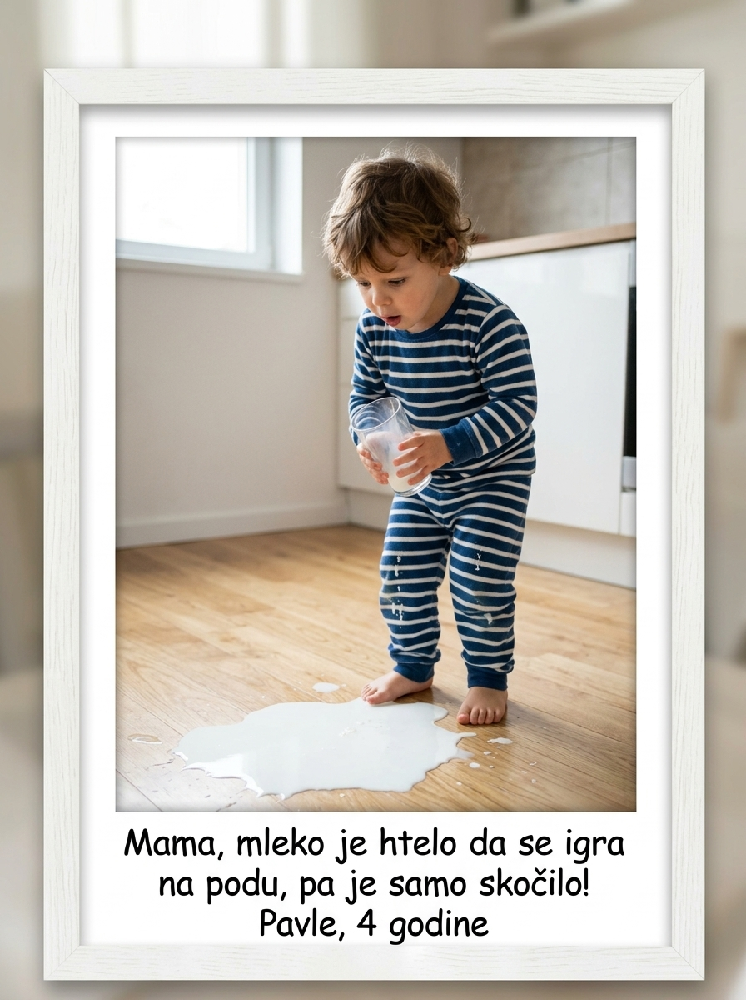
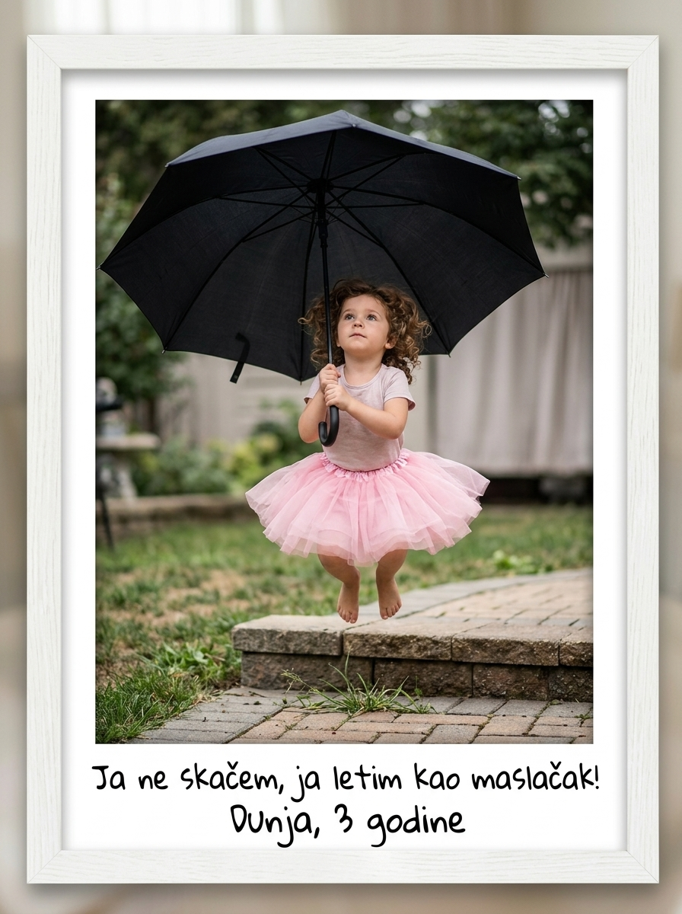

Misli malih genijalaca
Male misli.
Velike uspomene.
Sačuvaj najiskrenije reči svog deteta u slici koja će vam izmamiti osmeh i za mnogo godina.
Kreiraj dečju uspomenuPrimeri dečjih uspomena
Demonstracioni primeri. Prikazane fotografije su ilustrativne.








1
Dodaj fotografiju deteta
Topla, prirodna fotografija bez preterane obrade.
2
Upiši izjavu
Biser, simpatična misao ili iskrena dečja rečenica.
3
Izaberi format
Digitalno, štampano ili uramljeno — po izboru.